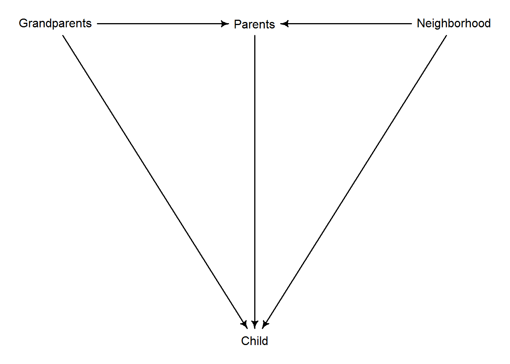

Chapter 5 The haunted DAG
These are notes on section 6.3.2 The haunted DAG that demonstrates how collider bias can arise, if one of the variables is unobserved and we do not realize that the have a collider in our DAG. The DAG itself is below, I’ve only changed Unobserved into Neighborhood.

The example in the book shows that if we include Grandparents while “controlling for” influence of Parents but ignore influence of the Neighborhood, the influence of Grandparents is negative rather than zero. It is zero in the book but it can originally be positive or negative, point is it is different from what is inferred by the model. And, importantly, an estimated effect of Parents is also different from its true value. The book shows it visually but I found that in this case algebra is helpful to understand it at the level of “how does a regression model know”.
Let us start with a full model. For the sake of simplicity, we will ignore coefficients for computing Parents variable from Grandparents and Neighborhood but this does not change the general picture.
\[ P = G + N\] Thus, the linear model for child education is \[C = \beta_P P + \beta_G G + \beta_N N\]
Substituting $ P = G + N$ gives us \[C = \beta_P (G + N) + \beta_G G + \beta_N N\]
Rearranging terms a little \[C = (\beta_P + \beta_G) G + (\beta_P + \beta_N) N\]
Note that this means that we do not fit individual coefficients, in both cases we fit a sum of two. And, as with multicollinearity, individual coefficients can be in a wrong place and unreliable as long as they add up to the “true” coefficient value. Thus, ignoring the noise and concealing the effect of Parents, we might as well fit
\[C = \beta_G^\prime G + \beta_N^\prime N\]
where, \(\beta_G^\prime = \beta_P + \beta_G\) and \(\beta_N^\prime = \beta_P + \beta_N\) are the total effect of grandparents and neighborhood of child education.
What if we ignore Neighborhood? This means that we explicitly set \(\beta_N = 0\) and that is the point when the sum of coefficients starts causing us problems. Recall that the model fits \(\beta_P + \beta_N\) and not each term separately. Thus, setting one of them to 0 does not upset the model, as it can always compensate with the other coefficient. Here, that other coefficient is \(\beta_P\), so its value now is that of the “true” sum: \(\beta_P = \beta_P^{true} + \beta_N^{true}\).
Unfortunately for us, \(\beta_P\) appears at two places, as it is also used to quantify effect of grandparents: \[(\beta_P + \beta_G) G\]
Originally, it reflected only the influence of parents, so it was not a problem. But now it is artificially inflated14 as it stands for influence of both parents and neighborhood. Problem? Not for a model that fits a sum. How do you make sure that the sum still adds up? You change other coefficients! Here, we can still wiggle \(\beta_G\) so that everything adds up. Given that \[\beta_P = \beta_P^{true} + \beta_N^{true}\] model just needs to subtract that same \(\beta_N^{true}\) and get our sum back. So \[\beta_P + \beta_G = (\beta_P^{true} + \beta_N^{true}) + (\beta_G^{true} - \beta_N^{true})\]
Thus, if we do not explicitly model the effect of neighborhood, it sneaks in nonetheless, hiding inside both parent and grandparent coefficients. What makes it really problematic and confusing is that the effect is opposite for the two terms: if we add \(\beta_N^{true}\) at one place, we must subtract it at the other.
So, what are you supposed to do with this new knowledge? You do not take fitted model coefficients at their face value. You always have a fine-print “Only assuming that my small world is correct and it probably is not” at the back of your head. You think of several models and think of ways to tease out the true relationship. DAGs and statistical models can help you, but they cannot do magic and tell the “real truth” by themselves.
In general, changed depending on the effect signs of individual effects.↩︎